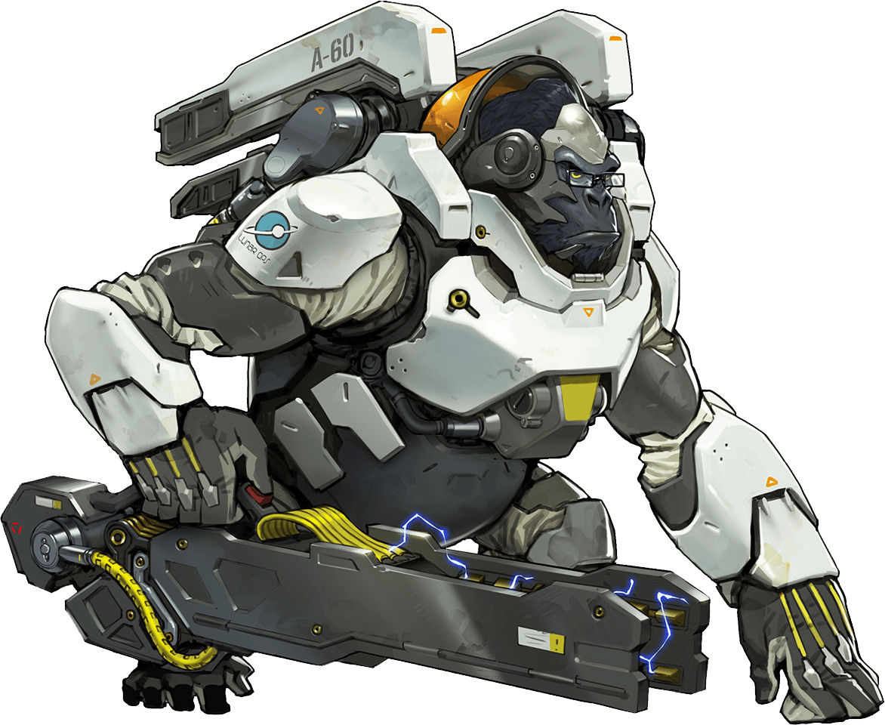
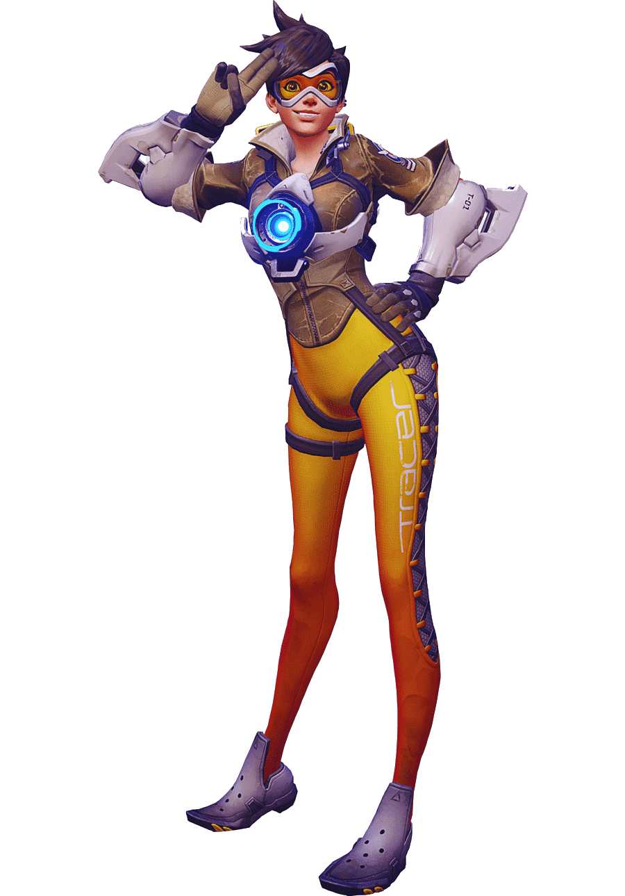

HEROJI
Istražite cijeli tim!
Winston
Winston je TANK heroj u Overwatch-u. Uz pomoč svojeg električnog topa i ljubavlju prema maslacu od kikirikija sigurni smo da će vam pomoći u vašoj pustolovini! Kao Superinteligentana, genetski modificirana gorila, Winston je svojih prvih par godina preživio na mjesecu u znanstvenoj bazi. Nakon što su ostali majmuni u bazi napravili pobunu i ubili sve znanstvenike Winston je napravio svoju raketu sa kojom je došao na Zemlju. Od tada Winston je dio Overwatch tima te je jedan od najboljih znanstvenika na Zemlji!
Tracer
Tracer je pustolovka koja skače kroz vrijeme i širi dobrotu. Tracer koristi svoje pulse pištolje i svoje moči putovanja kroz vrijeme i prostor kako bi lukavo srušila svoje neprijatelje. Tracer je najmlađi heroj koji je ikada upao u Overwatch tim. Tracer je svoje moći dobila zbog incidenta koji se desio dok je isprobavala novi "teleportacijski avion", nakon incidenta svi su mislili da je mrtva ali nakon par mjeseci se opet pojavila ali se i promijenila njezine molekule su se desinkronizirale od toka vremena te je postala kao živući duh. Znanstvenik Winston joj je uspio napraviti kronalni akcelerator te ju unormaliti u vremenu, ali joj je također dao i mogučnost kontrolirati tu moč te je od tada Tracer jedan od glavnih dijelova Overwatch tima!
Moira
Moira je jednako briljantna i kontroverzna znanstvenica na vrhuncu genetskog inženjerstva, tražeći način da prepiše temeljne blokove života. Prvobitno izazvala je veliku pozornost kada je objavila kontroverzni rad u kojem je detaljno opisala metodu za stvaranje prilagođenih genetskih programa koji bi mogli promijeniti DNA. Moira je radila u sijeni Blackwatch-a te je eksperimentirala na na raznim ljudima ša čak i svojim kolegama. U svojeg ševa Reaper-a ,nakon jedne velike bitke, je ubacila eksperimentalnu substancu koja ga je promijenila u nešto što ljudi zovu "smrt". Iako je svojim radom stekla mnogo neprijatelja, njezino savezništvo sa znanstvenim kolektivom Oasis i nemilosrdnom terorističkom organizacijom Talon oslobodilo ju je moralnih i novčanih ograničenja, dopuštajući joj da slijedi svoje proboje s velikom učinkovitošću i nemilosrdnošću.